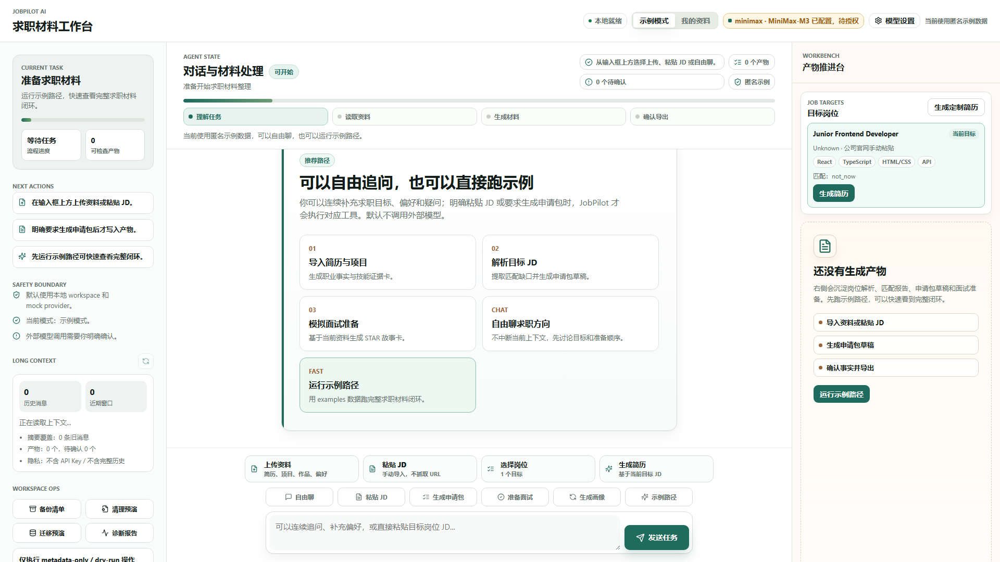
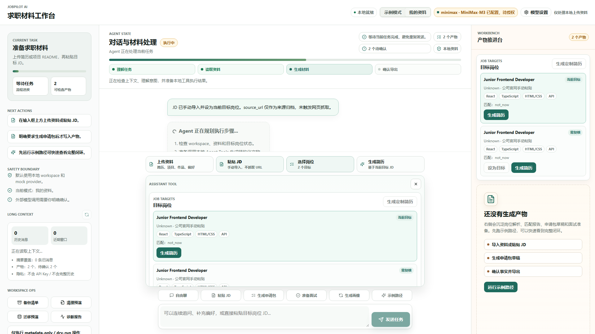
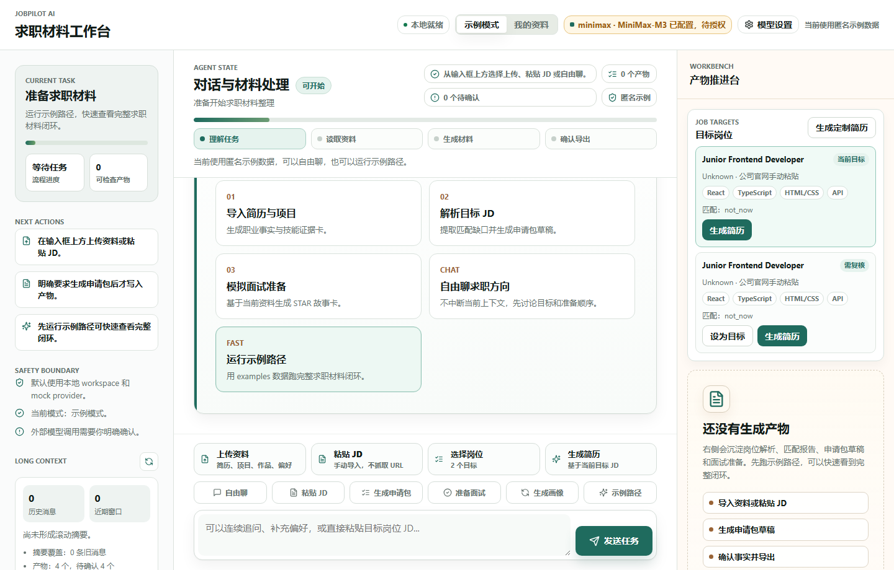
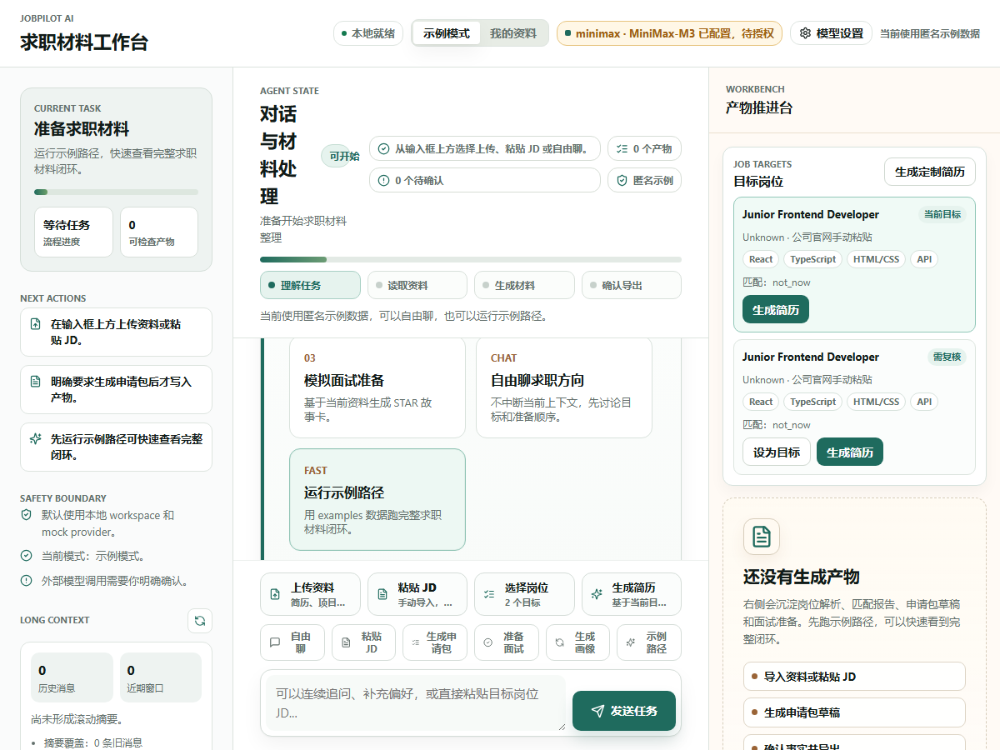
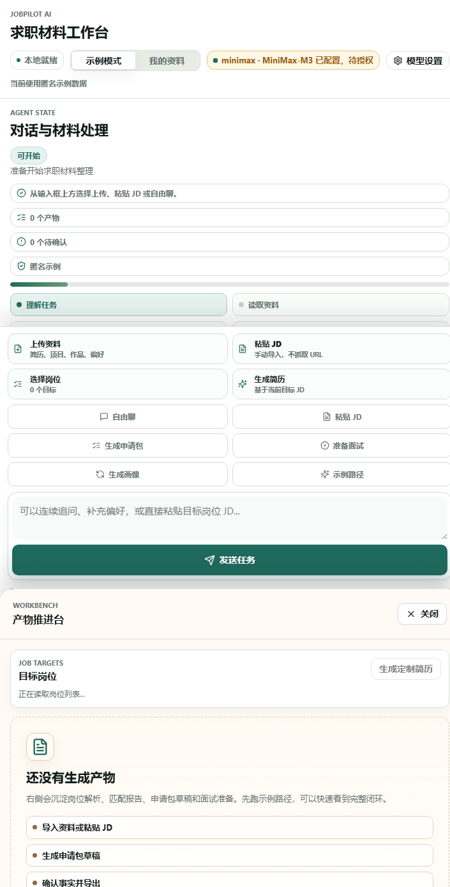
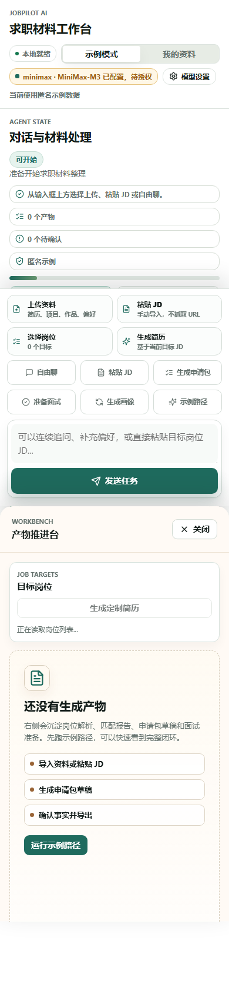

目标架构
- User Guidance：左侧解释资料清单、缺失影响、示例路径和安全边界。
- Conversation Plane：中央优先展示 Agent 状态、聊天时间线、输入框和紧贴输入框的工具入口。
- Workbench：右侧展示岗位、候选人画像、简历草稿、source refs、pending confirmations 和 export preflight。
- FastAPI / Domain / SQLite 业务语义保持 P8 已实现路径，不由 P8.1 重写。
当前实现
- apps/chatbox/src/main.tsx 新增 ComposerWorkflowDock，资料/JD/岗位/简历入口紧贴输入框。
- 中央渲染顺序为 ConversationHeader -> timeline -> composer，不再把 p8-workflow-strip 放在 timeline 之前。
- Workbench 接入 JobTargetList 和 ResumeGenerationPlane，岗位与简历结果进入右侧产物区。
- apps/chatbox/src/styles.css 新增 composer-tool-rail 和 composer-workflow-panel，并覆盖桌面、平板、移动响应式规则。
自动化步骤
| # | 步骤 | 动作 | 结果 |
|---|---|---|---|
| 1 | 打开 1920 桌面首屏 | goto | passed |
| 2 | 等待 Chatbox 标题 | waitText | passed |
| 3 | 验证 timeline 在 workflow 之前 | evaluate | passed |
| 4 | 1920 Chatbox-first 首屏 | screenshot | passed |
| 5 | 打开 JD 工具面板 | clickText | passed |
| 6 | 填写 JD 文本 | fill | passed |
| 7 | 填写平台 | fill | passed |
| 8 | 导入 JD | clickText | passed |
| 9 | 等待 JD 导入反馈 | waitText | passed |
| 10 | JD 导入与工作台 | screenshot | passed |
| 11 | 打开 1440 首屏 | goto | passed |
| 12 | 等待 1440 标题 | waitText | passed |
| 13 | 1440 Chatbox-first | screenshot | passed |
| 14 | 打开 1200 首屏 | goto | passed |
| 15 | 等待 1200 标题 | waitText | passed |
| 16 | 1200 Chatbox-first | screenshot | passed |
| 17 | 打开 720 平板首屏 | goto | passed |
| 18 | 等待 720 标题 | waitText | passed |
| 19 | 720 Chatbox 优先 | screenshot | passed |
| 20 | 打开 390 移动首屏 | goto | passed |
| 21 | 等待 390 标题 | waitText | passed |
| 22 | 390 Chatbox 输入区可达 | screenshot | passed |
验收标准
- 首屏主路径是 Chatbox，而不是资料/JD/简历生成大表单。
- 上传资料、粘贴 JD、选择岗位、生成简历入口紧贴输入框或位于清晰辅助区域。
- 右侧工作台展示岗位、画像、简历草稿、source refs、pending confirmations 和 export preflight。
- 1920px、1440px、1200px、720px、390px 截图无明显按钮错位、文字重叠或核心入口不可达。
- 报告不得声称招聘平台自动接入、真实 provider、真实个人资料、自动投递、SaaS、ASR 或会议平台已通过。
命令结果
| 命令 | 状态 | 证据 |
|---|---|---|
npm --prefix apps/chatbox run build | passed | > @jobpilot/chatbox@0.1.0 build > tsc && vite build vite v7.3.5 building client environment for production... transforming... ✓ 1578 modules transformed. rendering chunks... computing gzip size... dist/index.html 0.38 kB │ gzip: 0.26 kB dist/assets/index-B9qJwEiw.css 37.83 kB │ gzip: 7.63 kB dist/assets/index-BXHabywX.js 257.75 kB │ gzip: 81.30 kB ✓ built in 20.69s |
/mnt/c/workspace/interview_service/.venv/bin/python -c from pathlib import Path; import xml.etree.ElementTree as ET; p=Path('docs/active/jobpilot-stage-gap-and-acceptance.drawio'); ET.parse(p); print('drawio ok', p.stat().st_size) | passed | drawio ok 34873 |
static AST/text guard | passed | { "workflow_strip_before_timeline": false, "composer_workflow_dock": true, "workbench_job_list": true, "composer_tool_rail_css": true, "workflow_panel_max_height": true, "mobile_two_column_tools": true } |
PRD 规格检视
| PRD / Gate 要求 | 证据 | 结论 |
|---|---|---|
| Chatbox-first | 截图中中央先展示 Agent 状态和聊天时间线；P8 面板只在输入区工具坞按需展开。 | PASS |
| 资料/JD 入口紧贴输入框 | composer-tool-rail 包含上传资料、粘贴 JD、选择岗位、生成简历。 | PASS |
| 工作台承载产物 | Workbench 渲染岗位列表、候选人画像、简历草稿和 artifact cards。 | PASS |
| 多视口可用 | 本报告包含 1920/1440/1200/720/390 Headless Chrome 截图。 | PASS |
| 高风险边界 | 本验收只使用本地 mock/示例 workspace，不外呼真实 provider，不接入招聘平台。 | PASS |
代码检视
| 区域 | 结论 | 级别 |
|---|---|---|
| Conversation Plane | p8-workflow-strip 不再出现在 timeline 之前，符合主路径修正。 | passed |
| ComposerWorkflowDock | P8 能力入口复用现有 handler，不重写后端 API。 | passed |
| Workbench | 岗位和简历结果进入右侧工作台，减少中央表单压力。 | passed |
| Responsive CSS | 工具入口小屏两列、展开面板限高滚动，降低遮挡和重叠风险。 | passed |
文档审计
| 区域 | 结论 | 状态 |
|---|---|---|
| PRD | P8.1 目标体验与本实现方向一致。 | passed |
| 目标架构 | 未改变 API、Domain、SQLite、Artifact 业务语义。 | passed |
| 验收门槛 | 截图、build、drawio parse、静态 guard 均纳入证据。 | passed |
P8.1 阶段聊天能力边界
| 能力 | 本阶段结论 | 说明 |
|---|---|---|
| 自由聊天入口 | 保留 | 中央 Chatbox 和输入框仍是默认主路径。 |
| 多轮对话质量 | 非本阶段新增验收 | 不在 P8.1 报告中重复声明真实 provider 或长程对话质量通过。 |
| 真实 provider | 未执行 | 本轮未外呼 MiniMax、DeepSeek 或 OpenAI-compatible provider。 |
截图证据

evidence/p8_1_chatbox_first/p8_1_chatbox_first_1920.png
evidence/p8_1_chatbox_first/p8_1_jd_intake_workbench_1920.png
evidence/p8_1_chatbox_first/p8_1_chatbox_first_1440.png
evidence/p8_1_chatbox_first/p8_1_chatbox_first_1200.png
evidence/p8_1_chatbox_first/p8_1_chatbox_first_720.png
evidence/p8_1_chatbox_first/p8_1_chatbox_first_390.png未验证范围与审计意见
- 未验证真实 MiniMax、DeepSeek 或 OpenAI-compatible provider 回复质量。
- 未读取用户真实个人资料路径。
- 未登录、抓取、自动沟通或自动投递 BOSS/猎聘/拉勾等招聘平台。
- 未实现 SaaS、ASR、会议平台、自动投递或 MCP/CLI。
P8.1 自动化候选可按本报告截图和命令证据审查；若人工发现小屏遮挡或实际体验不符合 Chatbox-first，应打回 M4/M5。